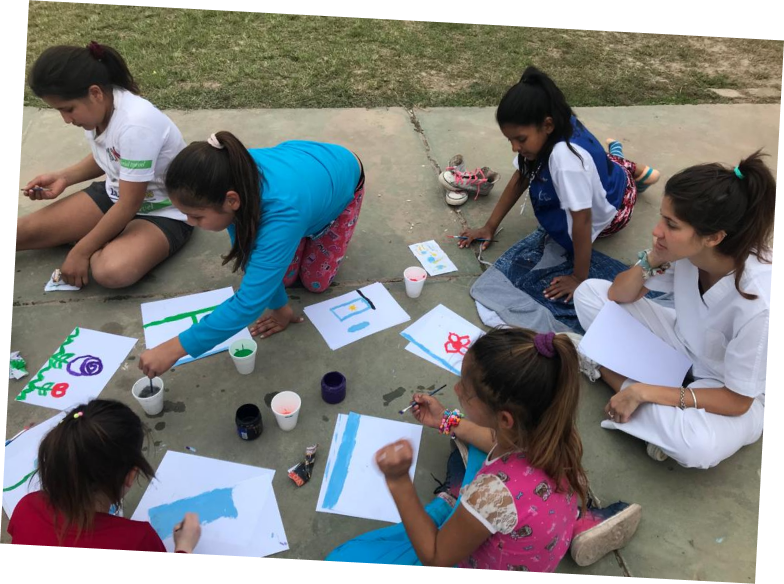
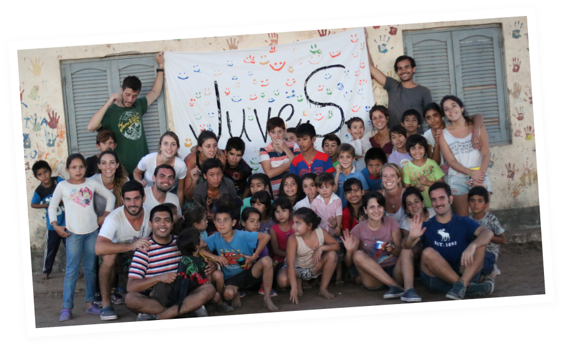
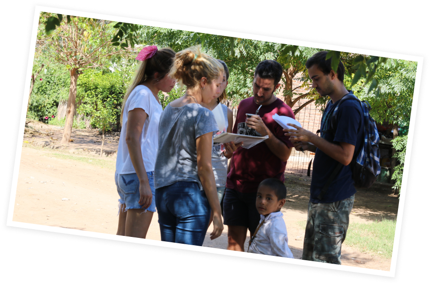

NUESTRO PROPÓSITO
VISIÓN
Ser actores activos en la sociedad para lograr una calidad de vida digna y con igualdad de oportunidades para las personas con menos recursos.
MISIÓN
Contribuir a mejorar la calidad de vida de las personas de la ciudad de Tres Isletas, provincia de Chaco, Argentina, poniendo a su disposición herramientas que contribuyan a construir un futuro más prometedor, garantizando la dignidad personal, el libre desarrollo de las personas sin ningún tipo de discriminación y, por último, el derecho a la igualdad efectiva entre hombres y mujeres.
VALORES
Responsabilidad: Asumimos el compromiso hacia la sociedad y el entorno que nos rodea. Respeto: Reconocemos a las personas y sus derechos. Trabajamos el respeto como vía de convivencia y enriquecimiento. Generosidad: Es hacer las cosas con el corazón y estar centrado en los demás. Trabajo en equipo, comparto con los demás todo lo que pueda serles útil. Me cuido a mí mismo y a los demás. Somos solidarios. Autenticidad: Se trata de ser fiel a uno mismo y a los demás. Tengo el valor de ser yo mismo, actúo con sinceridad y cuidado hacia los demás. Independencia: Juves no depende de ningún grupo social, económico, religioso ni político.


